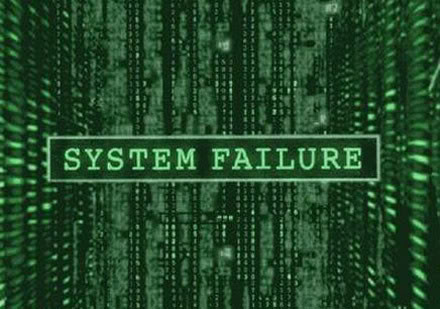

Rod Berne is a student, writer, and thought criminal. His columns run every Saturday. Follow him on Twitter.


Some have wondered why the media opted to spend time giving attention to our meetups, rather than directing their time to more pressing newsworthy issues. In this article, I will explain the real reason why this meet up drew so much attention from the media, and what this means for the future of Return Of Kings.
Media reports resulted in a shut down of the meet ups planned among our followers. Return Of Kings was founded by Roosh, who began his career writing about how to attract women. More recently, Roosh has written in-depth articles questioning the established narrative. These range from investigating the causes of plummeting Western birthrates, exploring the cycles societies go through on their way to collapse, and connecting the Hegelian Dialectic to modern social movements. This questioning caused the our planned meet ups to be shut down.
From this point onward, the terms System, Machine, and Establishment will be used interchangeably. These terms are defined as anything that perpetuates the dominant narrative and includes the media, governments, corporations, and the elite.
Here is a time line of meet up-related announcements from Return of Kings:
As you can see, when the meet up was initially announced, not a word of it was reported by the media. It was only when they recognized that it was a real and legitimate threat to the established order that they used smears, slander, and outright lies to ensure its elimination.
Of course, the media itself did not close down these meet ups. The Machine knew that they could not legally stop men from meeting each other and having a drink. So they did something far more terrifying: they used fabrications to mobilize the masses.
The Establishment intentionally took one article written by Roosh in which he proposed a thought experiment to increase the safety of women by “legalizing rape on private property.” The elites took a gamble that taking that article out of context and exaggerating it to the fullest extent would create a firestorm—notice that few of the slanderous articles actually linked to the piece in question, where any reasonable person could see that it was not written earnestly.
The media twisted the followers of ROK and Roosh into “rape supporters” simply because of one article that was obvious satire. Jonathan Swift once wrote that poor children should be eaten by the wealthy. Back in the 18th century, no one was stupid enough to take Swift’s essay seriously.

ROK has pointed out flaws and fabrications that exist in the Establishment. “Glitches in the matrix” for you nerds who are reading. Many are familiar with the “red pill” idea of the truth about sexual interactions only because of Roosh. His more recent writing is a more direct threat. Some men learning how to get laid won’t attract the attention of the Machine, but a few million dollars lost on a movie like Star Wars will draw their gaze.
Roosh’s ideas are not compatible with the established order, and he has many followers. This is a very real threat to the Machine, which must control the narrative. Throughout history, people who have their way of thinking threatened lash out. Their way of thinking was implanted by the System. Socrates, Jesus, Galileo, Malcolm X, Salman Rushdie, and the staff of Charlie Hebdo are a few notable targets of people who had their way of thinking challenged.
Notice that the mob response to Roosh’s writing was exactly the same as the Islamist response to cartoons. Burn the heretic. Eliminate the apostate. Kill the non-believer. Same switches, different triggers. SJWs and Islamists aren’t the only people with these switches inside of them. Bear that in mind the next time you encounter someone with whom you disagree.
One of these men is Roosh, the other is a migrant rapist.
Here is the thought process of the System, laid out in clear terms:
He has seen through some of our manipulations and has a large following. His writing staff caused the Hollywood arm of our Machine to lose a large sum of money. This man is too influential. Now he is encouraging others to meet with each other. This is dangerous. Let’s push the “rape button” on the masses. They will do our work for us. Contact the media.
While the sheep were stirred up into hatred and anger, many of them sending death threats to Roosh, ROK writers, and his followers, real news was going on. The Trans-Pacific Partnership was passed in New Zealand, which threatens the digital rights of internet users. ISIS has been using the migrant crisis to smuggle terrorists into Germany. Unemployment is increasing among native born Americans. Here is how it happened:
There is a darker element to all of this. There has been brewing anger in the West over the migrant crisis, especially after the Rape of Cologne. But people have been afraid to speak out against migrants for fear of being called racist. The Machine isn’t stupid, it knows that native Westerners have this underlying concern and anger.
Once again, here is the thought process of the System laid out in simple terms:
We have now allowed 2 million migrants into Europe in less than a year. People are scared. This Cologne thing has the masses riled up and they want to express their anger. How can we induce their rage in a controlled way, without threatening our policy of open borders? This Roosh guy is the ticket. We can use him to diffuse anger about the migrant rape spree by re-directing it to him rather than us or the migrants. Roosh will be their release valve. Contact the media.
The anger Westerners felt toward the migrants was sublimated into anger toward ROK supporters. Interestingly, because of Roosh’s ethnic background many angry protesters seemed to link him with Islam. You can bet they were thrilled that the media and SJWs were essentially giving them a free pass to blow off steam by expressing rage against a “stand in” for all of the Muslims currently raping women and children in Europe.
We were an acceptable target for them to redirect their hatred and violence, a useful idiot to vent pent-up emotion caused by an actual menace to society. We served our purpose.
In sum, first, the System was fearful of Roosh connecting so many dots. Second, their attention was drawn when many men wanted to discuss those dots. Third, to shut it all down, they lied to mobilize the masses to do their work for them. Fourth, the System got the benefit of using us to redirect anger about the migrant rape crisis. Finally, the narrative remained mostly intact.
There is an upside, the magnitude of which remains to be seen. With so much attention guided to Return Of Kings, our readership has grown. Our tenets have been spread far and wide. While it is true that some never read again and some will dislike what they see, many others will stay and join the club. Never before has Return Of Kings been on everyone’s lips this much.
Read More: Why International Meet Up Day Was Cancelled